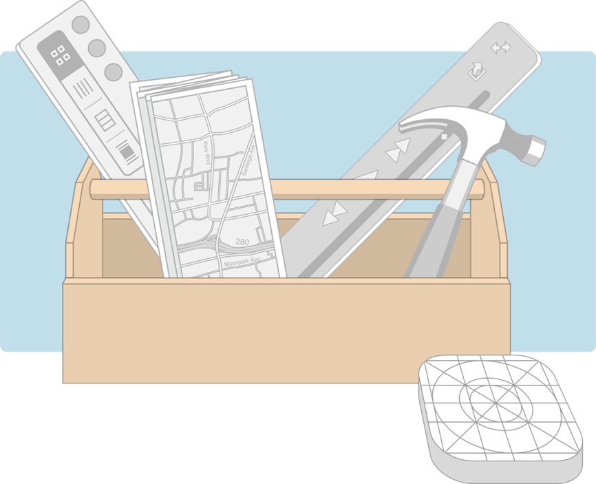
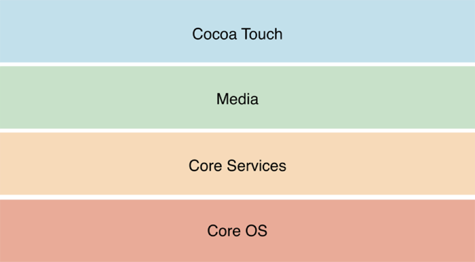
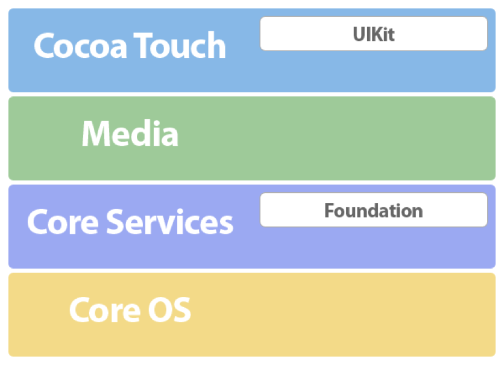

iOS

iOS是一个苹果公司开发的运行于iPhone、iPad和iPod Touch等移动设备上的操作系统。
当前版本12
iOS SDK

iOS SDK包含开发、安装、运行和测试iOS操作系统之上的应用软件所需的工具和接口
- 框架（Frameworks）: 动态共享的程序库和资源
- 工具: Xcode集成开发环境、 模拟器和开发文档等
- 其他
iOS的分层架构

iOS 作为iOS应用软件（App）和硬件设备间的中间层提供了一组定义良好的系统接口以便App可以方便与设备通讯交互
这些系统接口被以框架（Frameworks）的形式交付提供给开发者使用。一个框架是一个包含了一组动态共享的程序库和相应资源(例如头文件、图片、帮助应用等) 的目录。
Cocoa Touch层框架
- Address Book UI Framework
- Event Kit UI Framework
- Game Kit Framework
- iAd Framework
- Map Kit Framework
- Message UI Framework
- Twitter Framework
- UIKit Framework
构造iOS应用的核心框架
UIKit 框架
其中UIKit 框架(UIKit.framework) 提供了开发图形化事件驱动iOS App的基础设施，包括
- 基本应用管理
- 用户界面管理
- 视图控制器和视图
- 触摸和运动事件
- 文档模型和iCloud集成支持
- 多任务、打印、通知等机制
- 动画效果、内容分享等
- …
Media 层框架
- Assets Library Framework
- AV Foundation Framework
- Core Audio
- Core Graphics Framework
- Core Image Framework
- Quartz Core Framework
- Core Text Framework
- Core Video Framework
- Image I/O Framework
- Media Player Framework
- OpenGL ES Framework
包含了绘图、音频、视频处理技术的实现，用以实现iOS应用中的多媒体体验
Core Services 层框架
- Accounts Framework
- Address Book Framework
- Core Data Framework
- Core Foundation Framework
- Core Location Framework
- Core Media Framework
- Core Telephony Framework
- Event Kit Framework
- Foundation Framework
- System Configuration Framework
所有App都使用的基础系统服务
Foundation 框架
Foundation framework (Foundation.framework) 提供了 Core Foundation框架中大部分功能特性的（Swift）封装
- Collection data types (arrays, sets, and so on)
- Bundles/String management
- Date and time management
- Preferences management
- URL and stream manipulation
- Threads and run loops
- Regular expression matching
- …
Core OS 层框架
以上其他各项技术（框架）的实现基础
- Accelerate Framework
- Core Bluetooth
- External Accessory Framework
- Security Framework
- System
- Threading
- Networking
- File-system access
- Standard I/O
- Bonjour and DNS services
- Locale information
- Memory allocation
- Math computations
- …
核心框架

开发工具－Xcode

Tutorial
Start Developing iOS Apps